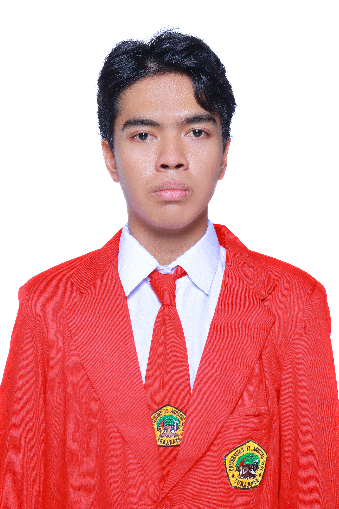

Perkenalkan, saya Ariel Alvian Yusuf, lahir pada 26 November 2006 dan saat ini berusia 19 tahun. Saya sedang menempuh pendidikan S1 Program Studi Sistem Teknologi Informasi di Universitas 17 Agustus 1945 Surabaya.
Saya tertarik dengan dunia teknologi, khususnya pengembangan website dan keamanan siber.
| No | Kode | Nama Matakuliah | Smt | SKS | Nilai | N.K. |
|---|---|---|---|---|---|---|
| 1 | 14823153 | Teknologi Informasi dan Aplikasi Bisnis Berkembang | 2 | 3 | B | 9.00 |
| 2 | 14823372 | Statistika dan Probabilitas | 2 | 2 | A | 8.00 |
| 3 | 14823313 | Sistem Basis Data | 2 | 2 | AB | 10.50 |
| 4 | 14823274 | Pemrograman Berorientasi Objek | 2 | 4 | AB | 14.00 |
| 5 | 14823393 | Interaksi Manusia Komputer | 2 | 3 | B | 9.00 |
| 6 | 14823333 | Algoritma dan Struktur Data | 2 | 3 | AB | 10.50 |
| 7 | 14823192 | Arsitektur dan Organisasi Komputer | 2 | 2 | B | 7.00 |
| 8 | 14823532 | Bahasa Inggris | 1 | 2 | AB | 7.00 |
| 9 | 14823103 | Konsep dan Fondasi Sistem Informasi | 1 | 3 | AB | 10.50 |
| 10 | 14823202 | Sistem Operasi | 1 | 2 | AB | 7.00 |
| 11 | 14823342 | Aljabar Linier | 1 | 2 | A | 8.00 |
| 12 | 14823362 | Kalkulus | 1 | 2 | B | 6.00 |
| 13 | 14823352 | Matematika Diskrit | 1 | 2 | B | 6.00 |
| 14 | 14823323 | Dasar Pemrograman** | 1 | 3 | B | 9.00 |
| 15 | 14823012 | Etika Pengembangan Teknologi Siber | 1 | 2 | B | 6.00 |
| 59 | Jumlah SKS | |||||
| No | Kode | Nama Matakuliah | Smt | SKS |
|---|---|---|---|---|
| 1 | 14823213 | Desain Jaringan Komputer dan Komunikasi Data** | 3 | 3 |
| 2 | 14823383 | Manajemen Data dan Keamanan Siber | 3 | 3 |
| 3 | 14823032 | Manajemen Sistem Informasi | 3 | 2 |
| 4 | 1003124202 | Pendidikan Agama Islam | 3 | 2 |
| 5 | 1003124102 | Pendidikan Pancasila | 3 | 2 |
| 6 | 14823293 | Pengembangan Sistem Berbasis Web** | 3 | 3 |
| 7 | 14823083 | Rekayasa Kebutuhan Perangkat Lunak * | 3 | 3 |
| 8 | 14823123 | Sistem Enterprise | 3 | 3 |